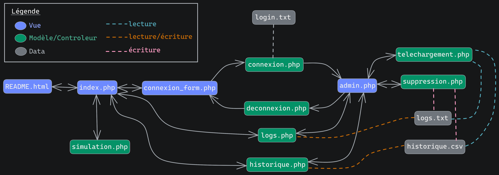

Présentation
Bienvenue dans le README de notre projet php. Vous trouverez le sujet du projet ici. Le projet consiste au développement d'un site de simulation de prêt bancaire où l'on peut consulter l'historique des dix dernières simulations.
Structure du site
Le schéma ci-dessous décrit le fonctionnement du site à haut niveau d'abstraction.
Usage
Utilisateur
Pour accéder au programme de simulation, il suffit de se rendre dans la page d’accueil et de scroller jusqu'à tomber dessus (ou alors de cliquer sur le menu du haut). Pour effectuer le calcul il suffit de remplir les cases Capital, Taux et Nombre de mois puis de faire simuler pour obtenir un résultat. Il peut également accéder à un historique qui résume les 10 dernières simulations du site.
Administrateur
En plus de toutes les fonctionnalité présentées plus haut, l'administrateur peut en plus se connecter au back-end. Depuis cette interface, il va pouvoir consulter les logs de façon plus détaillé que sur l’historique. L’administrateur va pouvoir naviguer dedans grâce a une liste déroulante. Le programme a été réalisé pour que ce soit les derniers logs qui soient affiché en premier. L'administrateur va pouvoir télécharger les logs (qui seront sous format .txt) ou bien les supprimer. Il a aussi la possibilité de consulter l'ensemble de l'historique, de télécharger l'historique (au format .csv), ou encore de supprimer l'historique. Pour quitter le Back-end, il suffit d'appuyer sur « déconnexion ».